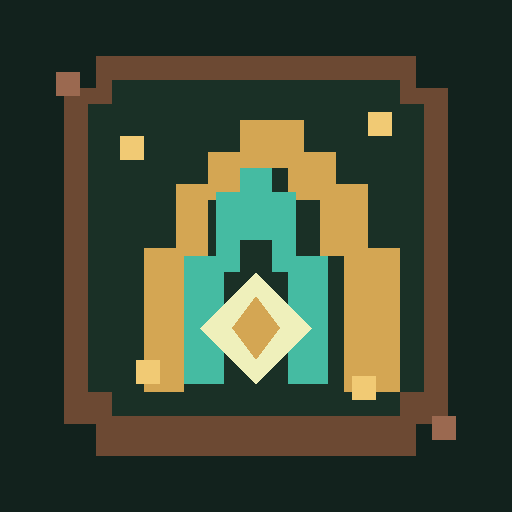

CRÔNICAS DE AURÓRIA
A rota para Aurória foi interrompida.
Folklard precisa de conexão para carregar o jogo. Verifique sua rede e tente novamente. O progresso já salvo permanece neste aparelho ou na sua conta.
TENTAR NOVAMENTE F11 alterna a tela cheia · Esc retorna à janela